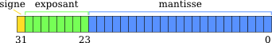

L’IEEE 754 est une norme pour la représentation des nombres à virgule flottante en binaire. Elle est la norme la plus employée actuellement pour le calcul des nombres à virgule flottante dans le domaine informatique, avec les CPU et les FPU. La norme définit les formats de représentation des nombres à virgule flottante (signe, mantisse, exposant, nombres dénormalisés) et valeurs spéciales (infinis et NaN), en même temps qu’un ensemble d’opérations sur les nombres flottants.
Un nombre binaire à virgule flottante est stocké dans un mot de 32 bits : 1 bit de signe (ici en jaune), où le 0 renvoie un "+" tandis qu'un 1, un "-" , 8 bits pour l'exposant(en vert et 23 pour la mantisse(en bleu).
L'exposant codé sur 8 bits, c'est a dire qu'il comprend 28 valeurs, 256 valeurs, on l'obtient en soustrayant 256 par le biais (qui est egal a 127) pour obtenir l'intervalle de valeurs [-127,128] qui nous permet de saisir des nombres allant de 10-38 à 1038
La mantisse elle se lit de la gauche vers la droite, elle comprend des valeurs allant de 2-1 à 2-23. Le premier bit (que nous appelerons rang) comprend 2-1 valeurs, le second 2-2, le 3ème, 2-3 en terme la mantisse est la somme des 2-le rang seulement si la valeur correspondant au rang est un 1 sinon (si elle est égal à 0) nous passons au rang suivant
La représentation des nombres à virgule flottante en binaire par la norme IEEE 754 est simplement la multiplication de l'exposant par la mantisse.
IEEE 754 = Signe + Exposant * Mantisse